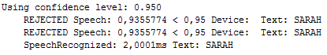
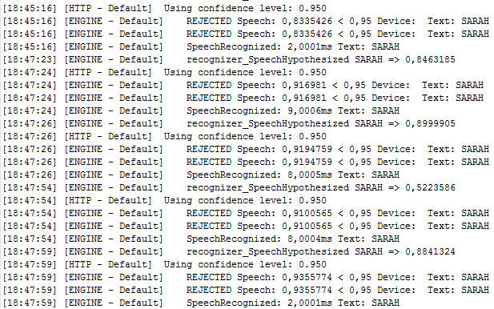

Réglage de la confidence
Rappel: La confidence ne s'applique que pour le mot-clé déclencheur de l'écoute, lorsque vous dites par exemple: "Sarah" pour déclencher l'écoute.
Pour les règles, ce n'est que la distance entre vous et le micro, la qualité du micro, de votre diction et ce que l'API Google comprend de ce que vous avez dit.
La confidence est la valeur de pourcentage comprise entre 0 et 1 pour laquelle une phrase dictée (dans le microphone) sera acceptée comme le mot-clé qui déclenchera l'écoute.
Comment régler la confidence du mot-clé ?
Déjà il faut comprendre que moins il y a de mots dans votre mot-clé, plus forte doit être la confidence et inversement, plus il y a de mots, moins forte est la confidence.
Par exemple, "Jarvis" est très facile à reconnaitre (1 seul mot et donc très simple), par conséquent, on aura tendance à augmenter la confidence pour ne pas avoir de déclenchements intempestifs.
A l'inverse, "S'il te plait Jarvis" est beaucoup moins facile à reconnaitre (plusieurs mots), par conséquent, on pourra avoir une confidence moins forte et moins de faux positifs.
En Résumé:
Un seul mot-clé engendre plus de faux positifs (des déclenchements intempestifs). On peut ajouter de la difficulté à trouver ce mot en augmentant la confidence ou/et en utilisant quelque chose de compliqué, "Jarvis" est simple, "psikharpax" est plus compliqué à matcher.
Alors, comment faire ?
Et bien, c'est à vous de choisir votre "mot" ou "phrase déclencheur" suivant ce que vous trouvez acceptable:
- Un seul mot, donc plus sympa... mais plus dur à déclencher l'écoute (Vous devrez définir une confidence haute pour éviter de trop nombreux faux positifs).
- Plusieurs mots, donc plus facile à déclencher l'écoute (et moins de faux) mais il faut dire une phrase...moins sympa.
A vous de voir...
Comment trouver une bonne confidence pour votre choix de mot-clé déclencheur ?
Sur le client ou vous voulez voir la valeur de la confidence courante:
- Le Serveur doit être démarré
- Démarrez le client (Voir le chapitre Démarrer - Client)
- Dans un éditeur de texte (notepad++)
- Ouvrez le fichier <CLIENT>/hotword/hotword.xml
- Ouvrez le fichier <CLIENT>/app/avatar.prop
- Ouvrez le fichier <CLIENT>/logs/microphone/micro-<date courante>.log
- Mettez délibérement une valeur haute pour la confidence dans le fichier hotword.xml
- Par exemple:<tag>out.action._attributes.threashold="0.950"...
- Sauvegardez le fichier.
- Dites le mot-clé déclencheur (Normalement l'écoute ne se déclenche pas)
- Retournez sur le fichier <CLIENT>/logs/microphone/micro-<date courante>.log
- En fin de fichier, vous devez voir des lignes comme celles-ci:

- Using confidence level donne la valeur 0,950 que nous avons mis dans le fichier hotword.xml
- REJECTED Speech: 0,9355774 (ici pour l'exemple qui n'est pas la même chez vous...) est la valeur de confidence que vous avez dictée
- < (inférieur à 0,95 est la valeur minimum pour déclencher l'écoute)
- Répetez plusieurs fois le mot-clé déclencheur puis examinez les valeurs rejetées
- Faites une moyenne, par exemple après plusieurs tests, j'ai ceci:

- J'ai donc les valeurs rejetées suivantes:
- 0,833 - 0,916 - 0,919 - 0,910 - 0,935
- Je fais une moyenne, en sachant que j'ai parlé tout doucement pour 0,833 et très fort pour 0,935, donc 0,910 me parrait une valeur correcte et 0,930 une valeur maximale à atteindre
- Comme je sais qu'Avatar incrémente seul la valeur de confidence si rien n'est dit, je vais définir une valeur légèrement inférieure, soit 0,905 pour laisser un peu de marge pour l'incrément.
- Retournez dans le fichier <CLIENT>/hotword/hotword.xml
- Ajoutez la valeur de confidence correcte 0,905 dans out.action._attributes.threashold
- Sauvegardez le fichier.
- Retournez dans le fichier <CLIENT>/app/avatar.prop
- Ajoutez la valeur maximale 0,930 que vous avez trouvée dans la propriété "max_threashold"
- Sauvegardez le fichier, redémarrez le client.
Vous avez maintenant une valeur de confidence qui déclenche l'écoute et une valeur maximale à ne pas dépasser.
Si vous trouvez que l'écoute se déclenche trop facilement, ne dites rien et laissez la confidence s'incrémenter automatiquement jusqu'à trouver une valeur correcte.
Créé avec HelpNDoc Personal Edition: Générateur de documentation et EPub facile